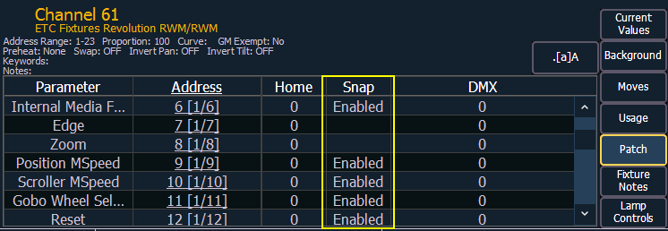

Certain parameters may not want to be subjected to cue timing. Those parameters can be set to snap. By default, Element will snap the parameters listed in the following table:
| Beam FX Index/Speed | Effect Library | MSpeed | Shutter |
| Camera IR Image | Enable | Negative | Shutter Strobe |
| Clip Directory | File | Object Directory | Strobe Mechanism |
| Color Effect | File Type | Object File | Sync Source |
| Color Index | Front/Rear Projection | Output Command | Text |
| Color Mix | Generator | Page | Texture |
| Control | Generic Control | Position Blink | Timeline |
| Copy Mod | Image Movement Speed | Projector Input | Timeline Position |
| Cue | Internal Media Frame | Relay | Tracking Object |
| Dimmer Curve | Library | Select | Transition Speed |
| Edge Blend Profile | Macro | Shape | Transition Time |
| Effect File | Mode | Shape Library | Transition Type |
In the [About] channel patch screen, the snap column shows which parameters for that channel are currently set to snap.

If you wish to disable any of the default snap parameters or enable snap for parameters that are not by default enabled, you will need to first create a copy of the fixture profile. In the fixture editor for the copied profile, change the parameter settings via the Snap Enable/Disable column.
Note: You will need to patch your fixtures to their new fixture type if you change which parameters are to snap or not.